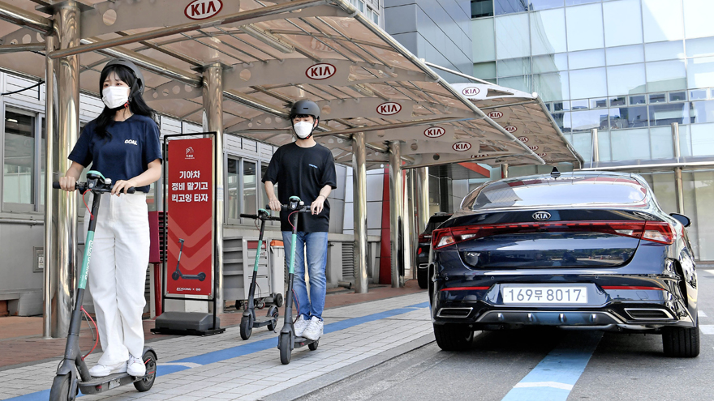

기아 뉴스
기아자동차, 직영서비스센터 전동킥보드 서비스 실시
2020-06-15
기아자동차가 직영서비스센터에서 공유형 전동킥보드 서비스를 선보인다.
기아자동차㈜는 국내 최대 규모의 전동킥보드 서비스 업체인 ‘올룰로(OLULO)’와 제휴를 맺고, 직영서비스센터 방문 고객을 대상으로 전동킥보드 서비스를 실시한다.
올룰로가 운영하고 있는 전동킥보드 서비스 ‘킥고잉(KICKGOING)’은 2018년 9월 런칭 이후 현재까지 누적 이용 수 380만회를 돌파하는 등 업계 선두권을 달리고 있다.
기아자동차는 서울 성동서비스센터에 전동킥보드 전용 거치 공간인 ‘킥 스팟(KickSpot)’을 설치하고 고객들에게 이용 쿠폰을 제공하는 방식으로 서비스를 시작하며, 점차 운영 지역을 확대해나갈 계획이다.
기아자동차는 직영서비스센터를 방문한 고객들이 차량 정비를 위해 대기하는 시간 동안 근거리에서 개인적인 용무를 편리하게 처리할 수 있도록 전동킥보드와 같은 마이크로 모빌리티(Micro Mobility) 서비스를 마련하게 됐다고 밝혔다.
기아자동차 관계자는 “차량 정비로 인한 대기시간동안 고객분들에게 이동 편의성을 제공해드리기 위해 전동킥보드 서비스를 도입하게 됐다”며 “앞으로도 고객 분들이 직영서비스센터에 방문하셔서 차량을 관리 하시는데 불편함이 없도록 다양한 서비스를 제공할 예정”이라고 말했다.
한편, 기아자동차는 자동차 업계 최초로 서비스센터 내 무인 키오스크를 설치, 비대면 접수를 통해 대기시간을 단축시키는 등 고객 편의 향상을 위해 다양한 서비스를 선보이고 있다.
 이전 글기아자동차, 2020년 5월 16만 913대 판매2020-06-01
이전 글기아자동차, 2020년 5월 16만 913대 판매2020-06-01
 다음 글기아자동차, 글로벌 PBV 시장 선점 위한 사업 추진 속도 낸다2020-06-16
다음 글기아자동차, 글로벌 PBV 시장 선점 위한 사업 추진 속도 낸다2020-06-16